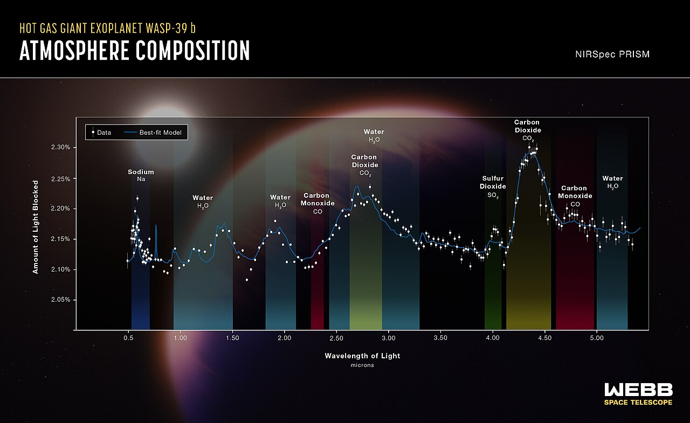

Spectroscopy
Pass starlight through a prism or diffraction grating and the spectrum tells you what the star is made of — every element prints a unique fingerprint of absorption lines.
Each chemical element absorbs light at a unique set of wavelengths corresponding to its electronic transitions. Pass starlight through a prism and you see a rainbow with thin dark lines at exactly those wavelengths — Joseph Fraunhofer mapped 574 of them across the solar spectrum in 1814. Each line is an element in the star's atmosphere stealing photons.
Astronomy reverses Fraunhofer's process: catalogue the lines, match them to elements, and you know what the star is made of. The Sun is 73% hydrogen, 25% helium, 2% heavier elements — that came from spectroscopy, no sample needed. The same technique applied to galaxies gave us the redshift-distance relation and ultimately the expanding universe; applied to molecular clouds it gave us interstellar organic chemistry; applied to exoplanet atmospheres (via transit transmission spectroscopy) it now gives us oxygen / methane / water signatures from worlds we'll never visit.
Modern spectrographs split light with a diffraction grating (a finely-ruled reflective surface, often with thousands of lines per millimetre) and feed the dispersed spectrum onto a CCD. Resolution is measured by R = λ/Δλ; consumer kit hits R~1000, JWST NIRSpec hits R~2700, the ESPRESSO spectrograph on the VLT hits R~140,000 — enough to detect a planet's reflex velocity of just centimetres per second.
Spectroscopy is the **most informative** astronomical observation. A single image tells you what's there; a single spectrum tells you what it's made of, how fast it's moving toward or away from you (Doppler shift), how hot it is (continuum shape), how strong its magnetic field is (Zeeman splitting), and how dense its source region is (line profile shape). Most major facilities — Hubble, JWST, VLT, Keck, ALMA — spend the majority of their time taking spectra, not pictures.

SEE IN THE APP
- /explore Planet TECHNICAL tab: atmospheric composition lines — every entry comes from a spectrum